艦これ 2015 秋イベント E-3 コロネハイカラ島東方沖
公開日：
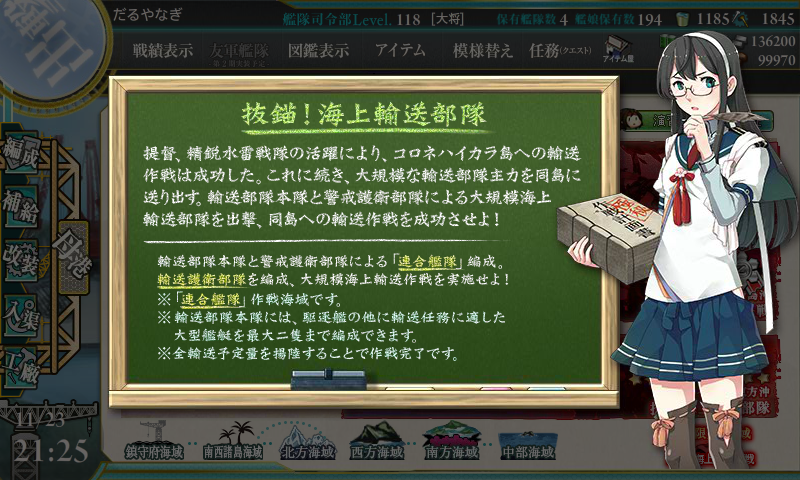
週末忙しかったので、まだ E-2 までクリアできていないのだけど、TL ではぼちぼちクリアした人もいるみたい。
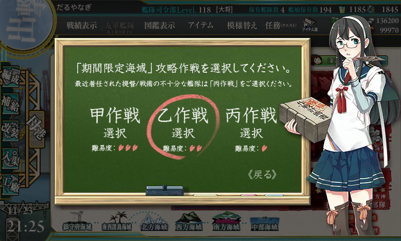
というわけで、E-3 もできればさくっと通過したいところ。甲難易度の報酬・四式ソナーは必須というわけでもないので、今回も乙で済ますことにした。
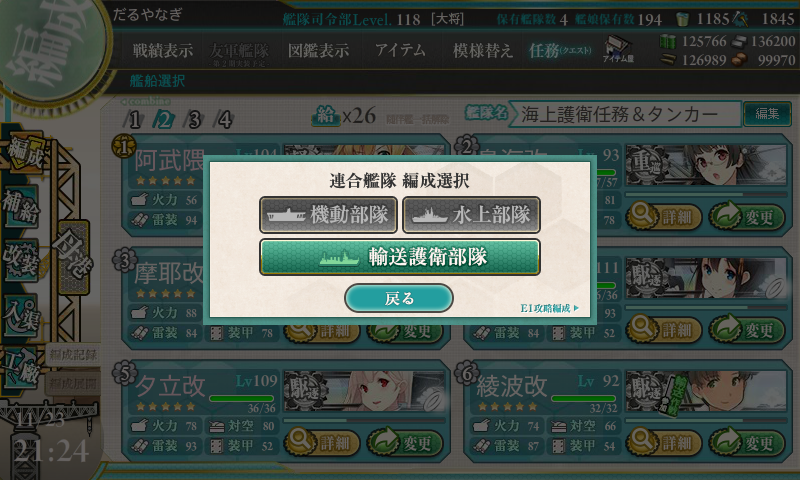
このマップは【輸送護衛部隊】で挑むマップ。なんか割と小型艦しか使えん。
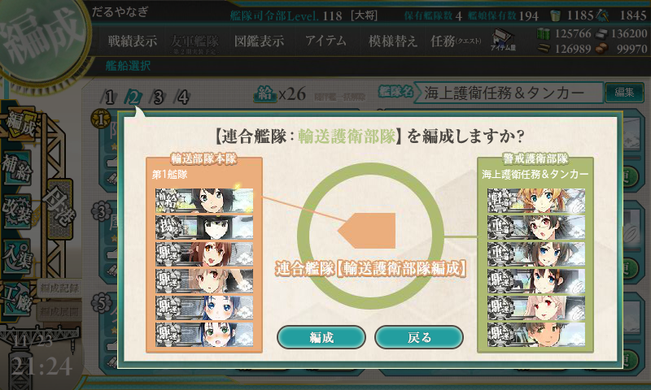
第一艦隊の攻撃は当たらない・通らないので、バケツと大発を持たせる。
- 速吸：艦攻×3 → 瑞穂：大発×2、艦隊司令部施設
- あきつ丸：強い艦戦×3
- 白露型駆逐艦×4：ドラム缶×3
第二艦隊が実質的な主力になるっぽい。阿武隈改二（軽巡旗艦必須）＋重巡×2＋駆逐×3（必須）が多分一般的な構成。
- 阿武隈改二：大発×3 → 副砲×2、甲標的
- 鳥海：主砲×2、夜偵
- 摩耶：対空カットイン、零観
- 時雨：対空カットイン
- 夕立：対空カットイン
- 綾波：主砲×2、照明弾
- （護衛退避で初霜をローテーション）
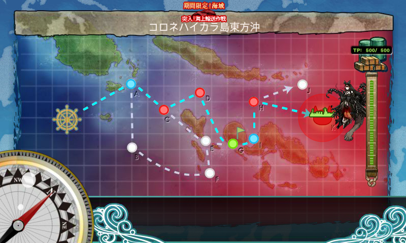
ルートは固定みたい（A では能動分岐で C を選択）。
戦闘経過
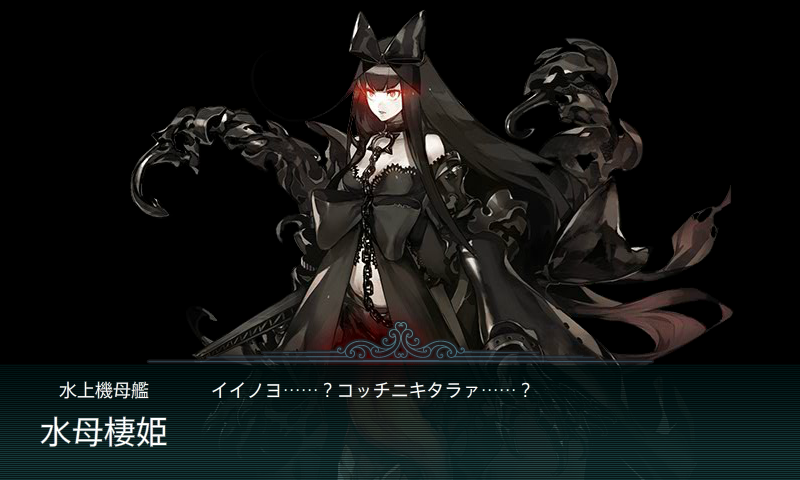
この人、めっちゃ器用で強いよな。
初戦、阿武隈改二に大発×3を載せたままで出かけるという大失態を犯す。
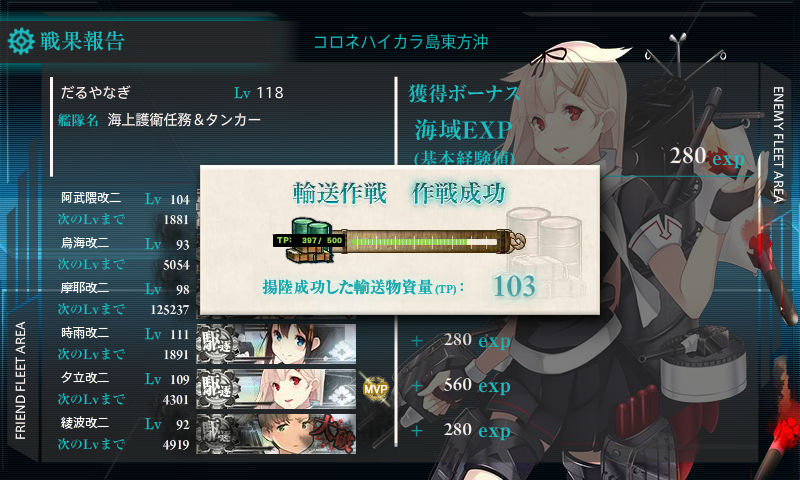
おかげで TP 103（ボスA勝利）をゲット。
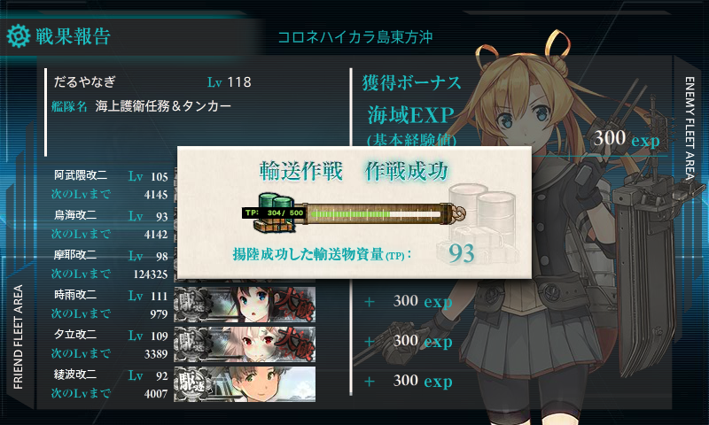
2戦目からは阿武隈の大発を下す（-3）＋速吸の艦攻が全部撃ち落されたので大発を載せた瑞穂にスイッチ（+2）で、大発は差し引き-1。これで TP 93（ボスA勝利）だった。S 勝利がとれたら、全5戦で済むなぁ、と皮算用をしていたのだけど、そうは問屋が卸さず。結局7戦する羽目になった。
- A → C：S → D：S → G → I → H：B → K：ボス：A
- A → C：S → D：S → G → I → H：S → K：ボス：A
- A → C：A → D：B → G → I → H：C → K：ボス：A（道中支援が一度もこなかった。H であきつ丸が護衛退避）
- A → C：S → D：B → G → I → H：A → K：ボス：A（B で第二艦隊の駆逐艦が護衛退避）
- A → C：S → D：B（旗艦「瑞穂」がスナイプされた……）
- A → C：S → D：S → G → I → H：A → K：ボス：A
- A → C：S → D：A → G → I → H：B → K：ボス：A
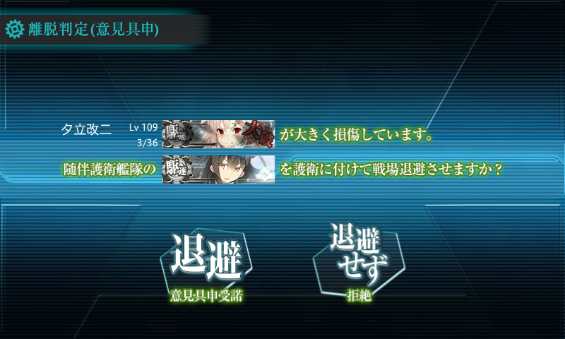
D での事故が多かったかな？ でも、護衛退避のおかげで途中撤退は「瑞穂」がスナイプされた1回で済んだ (＾ω＾)
ちなみに、道中・決戦支援は両方出した模様。道中支援でちゃんと雑魚をつぶしておかないと、雷撃戦で事故が多発する。
報酬
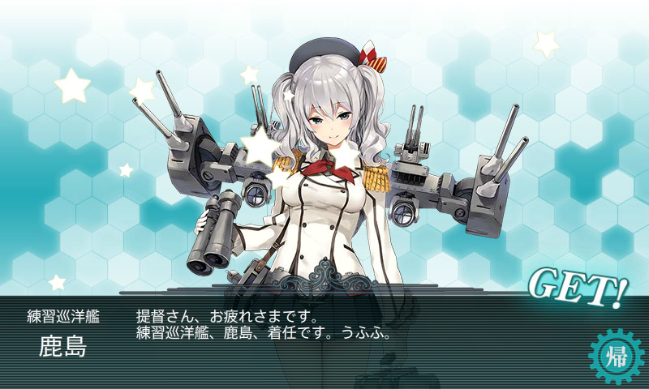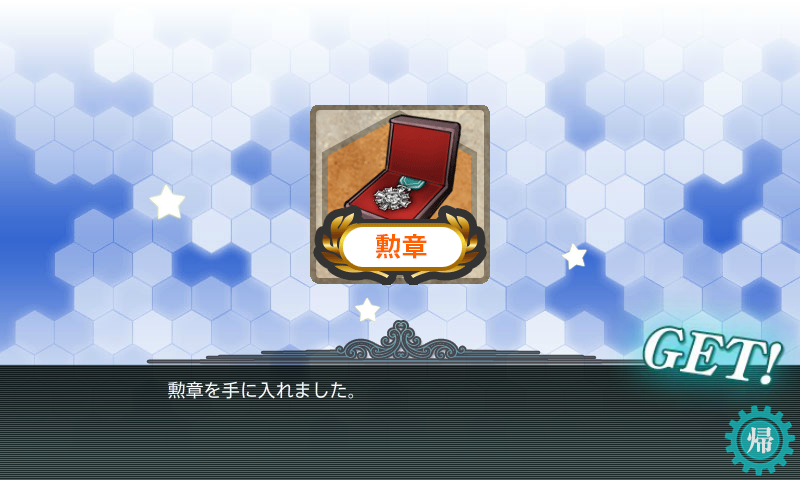
「鹿島」たまらん(*´Д`)ﾊｧﾊｧ
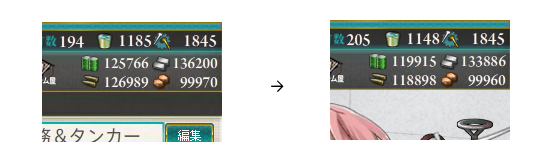
消費資源は 燃料6000、弾薬8000、鋼材2500、ボーキサイト10、バケツ37。バケツは第一艦隊の駆逐艦で節約すれば、この半分ぐらいでイケそうだった。
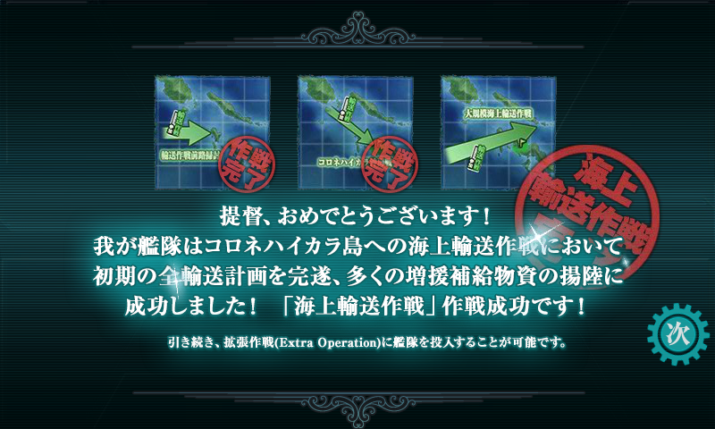